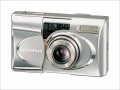

器材库 > 胶片袖珍相机（PS） > μ[mju:] Metal

规格总览
发布日期
2002-11
厂家推荐价格
50,000.00 （日元）
产品类型
35mmAF镜间快门照相机
使用胶卷/胶片
35mm
画幅
24×36mm
停产
是
镜头及对焦
镜头
38-105/5.6-11.3
镜头结构
8片/7组
对焦范围
广角端：0.6m至无限远；长焦端：0.8m至无限远
AF系统
自动对焦系统，可进行对焦锁定
曝光控制
测光系统
3区域测光
测光范围
广角端：3-16EV~长焦端：5-17EV
测光模式
评价测光
快门
程序式电子快门
胶卷感光度
自动设定，ISO 50-3200（带DX编码）；ISO 100（非DX编码）
取景规格
取景器
实像取景器（带自动对焦标记、特写校正标记、自动对焦指示灯和闪光指示灯）
过片系统
胶卷安装
自动装片（后盖盖上后自动卷到第一张）
过片
自动过片
倒片
自动倒片（到了胶片的末端，可进行自动倒片，且自动终止倒片）；在任何一点均可利用中途倒片键倒片
胶卷计数
累计型，带有自动重置功能，于LCD液晶面板显示
闪光灯
内置闪光灯
有
闪光涵盖范围
ISO 100时，广角端：0.6-3.2m；长焦端：0.8-1.6m
回电时间
0.5-6秒
闪光模式
自动闪光，减轻红眼，不闪光，强制闪光，夜景，减轻红眼夜景
其它规格
自动日期
可选择“年月日、月日年、日月年、日时分、无”5种显示
电池
1枚3V锂电池（CR2）
颜色
银色
尺寸
101×57×42mm
重量
210g
钩魂2010-10-28 11:414.75 分
操作性 4.50功能性 4.50美观性 5.00趣味性 5.00耐用性 5.00性价比 4.50
产品图 / 样片
奥林巴斯 μ[mju:] Metal
评测 / 相关文章
该产品暂无存档的评测文章